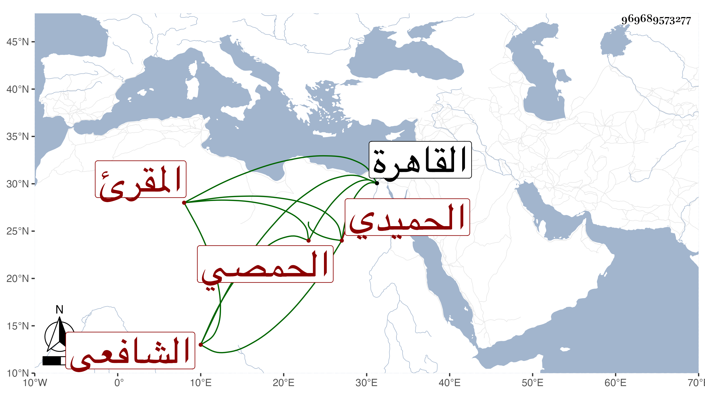

0902Sakhawi.DawLamic.ITO20230111-ara1.EIS1600.969689573277
Biography ID: 969689573277
879
علي بن علي بن محمد العلاء أبو الحسن الحميدي الحمصي الشافعي المقرئ . قدم القاهرة فعرض علي في جملة الجماعة البهجة وجمع الجوامع وألفية النحو والشاطبية ومقدمة ابن الجزري في التجويد وكتب عني بعض مجالس الإملاء وسمع مني غير ذلك وجمع للسبع إلى الأعراف علي عبد الغني الهيثمى وكان قد جمع ببلده على أبي بكر بن أحمد بن مقبل وأجازا له .
